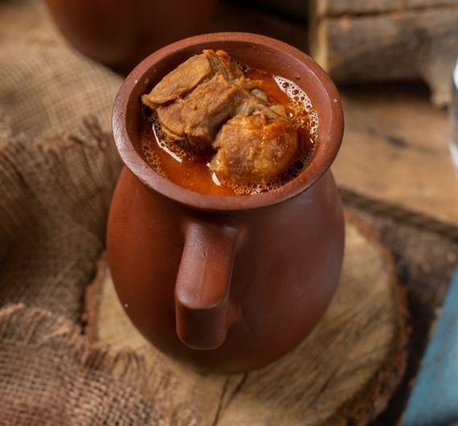

Piti (Traditional Azerbaijani Meat Soup)

Description :
Soup piti is a national dish of Azerbaijan cuisine. This soup has several important features.
- Firstly, traditionally such soup is prepared exclusively from lamb with the addition of chickpeas. These components are often unchanged and they give the dish a rich, unique taste.
- Secondly, dried plum (or quince): this product gives broth a light sourness and is also mandatory.
- Third, the way of cooking. Soup piti is not cooked in a saucepan, but immediately divided into portions and cooked in an oven in small pots.
Soup piti – this is one of the most famous Azerbaijan dishes, the popularity is not inferior to shish kebab. This pea soup is well known and can cook in all parts of the Caucasus. The main ingredients of this dish since ancient times were considered peas and lamb. Piti soup is the first dish, although visually it resembles a sauce.
Ingredients :
- 500 g of lamb
- 2 onions
- 1 large tomato
- 2 quinces
- 2 potatoes
- 3 tablespoons dry peas chickpeas
- 2 tablespoons mint
- Salt and pepper
- Black peppercorns
Preparation :
- In advance it is necessary to soak chickpeas in water (for 10 hours, it is possible for the night).Drain the water, rinse the peas.
- Cut the meat into small pieces. Onion cut into half rings, quince cubes.
- Preheat the oven to 190 degrees. Put onions, meat, quince and peas in pots.
- To make it soup, fill the pots on half. Add 1 cup of boiling water to each pot, cover with lids and put in the oven for 30 minutes.
- After 30 minutes take out the pots from the oven. Add potato and tomato, cut into large pieces. If necessary, add more water, but not too much, because water can spill out. Salt and pepper to taste.
- Cook another 40 minutes.
- To take out pots with soup from an oven to add finely cut mint and peas of black pepper. Leave it under the lid for 3 minutes.
- Serve the soup with pita bread. You can eat directly from the pot, or you can pour into a plate.
Nuş olsun!